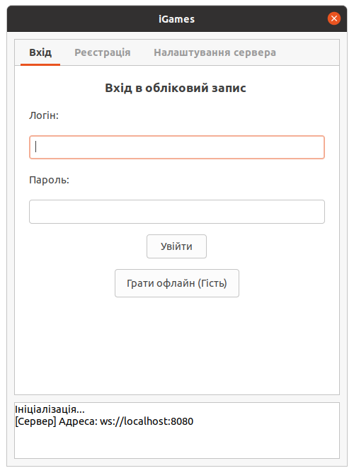
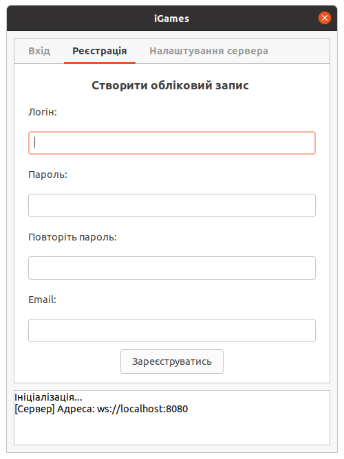
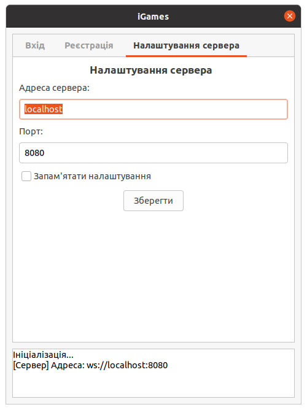
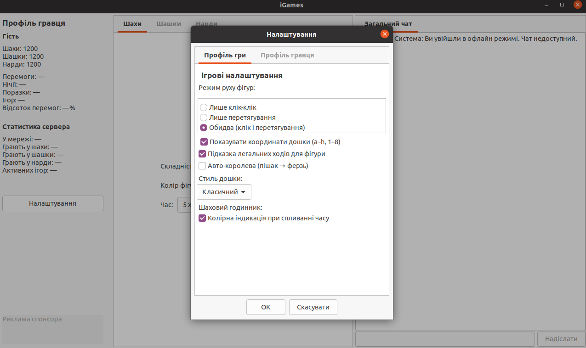
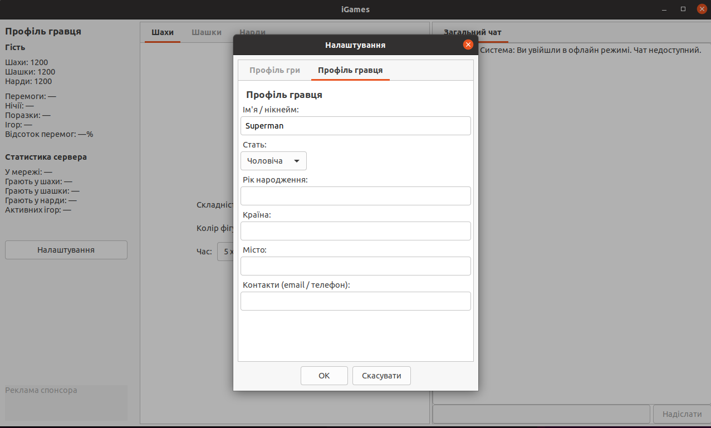

З чого почати
iGames — це легкий клієнтський додаток для настільних ігор. Щоб почати, завантажте версію для своєї операційної системи, запустіть її та підключіться до глобальної екосистеми гравців.
- Завантажте клієнт для Windows, Linux або macOS.
- Запустіть програму — вона підключиться до глобальної екосистеми iGames.
- Оберіть дисципліну та приєднуйтеся до лобі або кімнати.
Завантажити клієнт для своєї ОС


Налаштування сервера
Перед підключенням відкрийте вкладку «Налаштування сервера». За замовчуванням клієнт використовує ws://localhost:8080. Для віддаленого середовища вкажіть адресу та порт сервера й збережіть налаштування.

Шахи
Класичні Шахи — Гра королів. Елітна дисципліна, яка вимагає глибокого стратегічного мислення, тактичної пильності та вміння контролювати центр дошки. Повна відповідність правил ФІДЕ, включаючи рокіровку, взяття на проході та автоматичну фіксацію нічиєї (пат, триразове повторення позиції).
Класичні шашки 8х8
Класичні шашки 8х8 — динамічна дисципліна на стандартній дошці 8×8. Тут важливі контроль діагоналей, темп і вміння бачити загрози не лише попереду, а й позаду.
Дошка та рух
Кожен гравець починає з 12 шашок на темних клітинках. Прості шашки рухаються по діагоналі вперед на одну клітинку, а взяття виконують стрибком через шашку суперника.
Зворотні взяття
Ключова особливість варіації: прості шашки можуть брати не лише вперед, а й назад. Тому клітинка позаду не є безпечною — прораховуйте зворотні загрози перед кожним ходом.
Дальні «летючі» дамки
Шашка, яка досягає останньої горизонталі, стає дамкою. Дамки рухаються та беруть на будь-яку відстань по діагоналі, якщо шлях вільний. Це відкриває «летючі» комбінації через усю дошку.
Мета партії
Перемагає гравець, який позбавляє суперника всіх шашок або можливості зробити хід. Уважність до зворотних взяттів і довгих діагоналей часто вирішує результат.
Довгі нарди
Довгі нарди — це дисципліна для тих, хто любить довгі стратегії, контроль простору та точний розрахунок темпу. Усі 15 шашок починають поза дошкою, а партія будується навколо входу в дім, проведення шашок і зняття їх з дошки.
Стратегічна розстановка
Спочатку гравці вводять шашки у свою домашню чверть, а потім проводять їх по колу. Зайнятий суперником пункт блокує рух, тому важливо заздалегідь будувати власну структуру та залишати собі запасні маршрути.
Блокування та темп
У довгих нардах немає вибивання на бар: зайнятий пункт просто блокує прохід. Контролюйте входи до своєї домашньої чверті, створюйте щільні бар'єри та змушуйте суперника витрачати кидки на обхідні шляхи.
Рейтинг ELO
ELO — це автоматична змагальна драбина iGames. Вона відображає поточний рівень гравця та динаміку його прогресу в кожній окремій дисципліні.


K-фактор 32
Після кожної рейтингової партії сервер застосовує стандартну формулу ELO з K-фактором 32. Кожен результат має відчутний вплив на рейтинг, а система швидко реагує на зміни результатів.
Мінімальний рейтинг 100
Рейтинг ніколи не опускається нижче 100. Навіть після серії поразок гравець зберігає базову позначку 100, тому драбина залишається мотивуючою.
Окремі дисципліни
Шахи, класичні шашки 8х8 та довгі нарди ведуть незалежні рейтинги. Успіхи в одній грі не змінюють рейтинг в іншій, тому кожна дисципліна має власну змагальну історію.
Транзакційний перерахунок
Результат партії, зміна рейтингу та запис в історію застосовуються сервером як одна узгоджена транзакція. Це виключає розбіжності між гравцями та втрату оновлень.